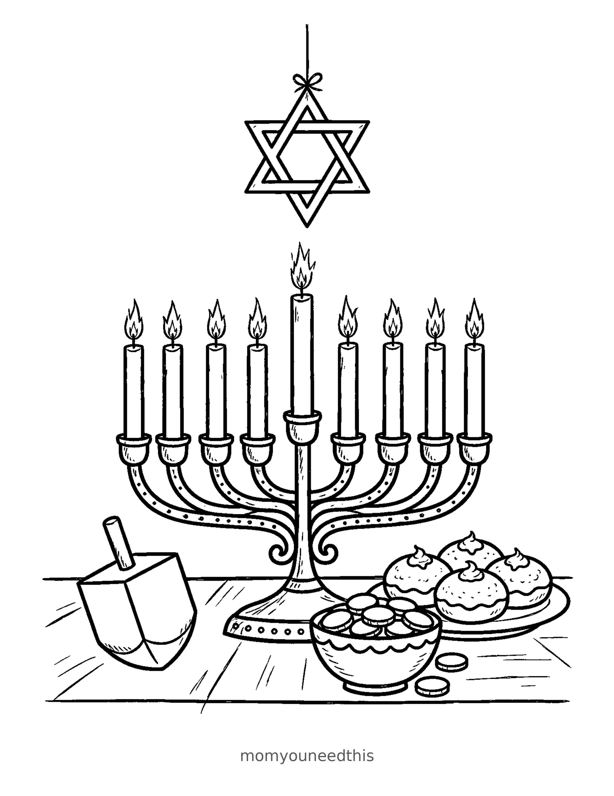
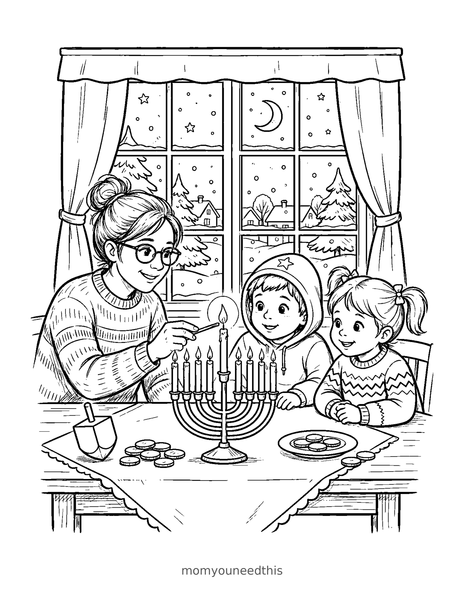
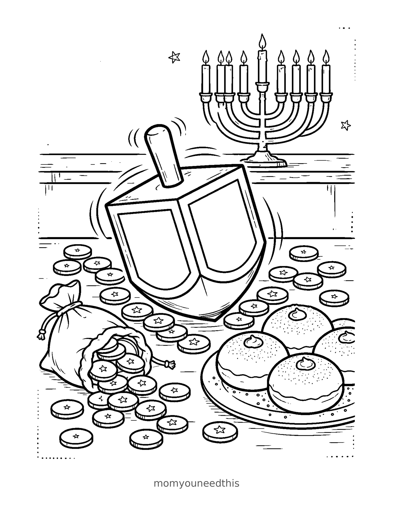

Free Hanukkah Coloring Pages Menorah, Candle-Lighting & Dreidel Printables
If you have been looking for hanukkah pictures to color this December, you are in the right place — three scenes to print at home: a menorah glowing on a table set with gelt and sufganiyot, a family lighting the candles together, and one big dreidel made for little hands. Download the set below, print on letter-size paper, and let the coloring fun begin. No signup needed.
Last updated: November 5, 2026
Quick Answer
Yes — this page has three free printable Hanukkah coloring pages: a menorah table scene with all nine candles lit, a family lighting the menorah on a snowy night, and a big dreidel close-up for the youngest colorers. Bold outlines and big spaces, made for little hands. Download, print on letter-size paper, and hand over the crayons — no signup, no cost.
At a Glance
- Ages: 3–8
- Pages: 3 free printables
- Format: Print at home, letter size
- Cost: Free, no signup
- Supplies: Crayons or markers
- Time: 10–20 minutes
🕎 Menorah Table Coloring Page

🎨 Download Your Free Menorah Table Coloring Page
All nine candles lit and glowing — the full Hanukkah table with a dreidel, a bowl of gelt and a plate of sufganiyot beside the menorah, and the Star of David hanging above it all.
⬇️ Download Free Menorah Page 🖨️ Print Menorah Page🎁 Free printable for preschoolers & kids
🕯️ Lighting the Menorah Coloring Page

🎨 Download Your Free Candle-Lighting Coloring Page
The moment everyone waits for — a parent lighting the candles while the children watch, the dreidel and gelt ready on the table and a snowy, starry night outside the window.
⬇️ Download Free Lighting Page 🖨️ Print Lighting Page🎁 Free printable for preschoolers & kids
⭐ Dreidel Close-Up Coloring Page

🎨 Download Your Free Dreidel Coloring Page
One big, bold dreidel to fill with color — the simplest page in the set and the best first Hanukkah coloring page for toddlers and preschoolers.
⬇️ Download Free Dreidel Page 🖨️ Print Dreidel Page🎁 Free printable for preschoolers & kids
More Coloring Pages
Tap any picture to open its theme page and download the free printable.


🕎 How To Use This Page
- Browse the three scenes and pick the Hanukkah moment your child will love most — the full table, the candle-lighting, or the big dreidel.
- Tap download or print under that design — the file opens full-size, ready for letter-size paper.
- Print a copy for each night — there are eight nights of Hanukkah, and coloring one page together makes an easy, cozy nightly ritual.
- Color together with crayons or markers, then hang the finished page near the menorah where everyone can admire it.
🕎 Why Kids Love Hanukkah Coloring Pages
Hanukkah is a holiday built around light, and coloring it is a way for kids to step inside the celebration while they wait for sundown. These scenes cover the moments children look forward to most: the menorah glowing with all nine candles, the family gathered close for the lighting, and the dreidel ready to spin. Every flame, coin and donut on the page is a small decision a child gets to make — gold or silver gelt, striped or spotted sufganiyot, deep blue or bright sky behind the window.
The set also carries the holiday's rhythm. In 2026, Hanukkah begins at sundown on December 4, and there are eight nights to fill — print the pages across the week and your child can color one flame gold for each night that has passed, or finish a whole new scene each evening after the candles are lit.
🕯️ Meet the Three Hanukkah Scenes on This Page
The menorah table. The full celebration spread: a menorah with nine candles — eight for the eight nights, plus the taller shamash, the helper candle, standing in the center. On the table beside it sit a dreidel, a bowl of gelt (the chocolate coins children play for) and a plate of sufganiyot, the jelly donuts fried in oil for the holiday. A Star of David hangs above the scene.
Lighting the menorah. A parent lights the candles while two children watch, the dreidel and gelt waiting on the table for the game that follows. Through the window behind them, snow falls under a starry sky — the coziest picture in the set, and the one with the most detail to color.
The dreidel close-up. One big dreidel, front and center, with gelt coins and stars around it. The dreidel's sides are blank on purpose — real dreidels carry Hebrew letters, and leaving them empty means your child can decorate each side any way they like, letters, patterns or pictures of their own.
✏️ Hanukkah Coloring Tips
- Make the flames glow. Yellow flames with a ring of orange, on a deep blue background, make the candles look lit — the darker the room around them, the brighter they shine.
- Go gold and silver. Gelt is chocolate wrapped in gold or silver foil, so metallic crayons (or plain yellow and gray) make the coins look real enough to eat.
- Count the candles. On the table scene, count the flames as your child colors them — eight nights, plus the taller helper candle in the middle makes nine.
- Decorate the dreidel. Its sides are blank by design. Older kids can draw in their own patterns — or look up the real Hebrew letters and copy them in.
- Save one for the last night. Print an extra copy of the table scene and keep it for the eighth night, when all the real candles are lit too.
🕎 Coloring Pages for Different Ages
For ages 3 to 4, start with the dreidel. It is one big central shape, and the coins and stars around it are wide and bold — little hands can fill them without worrying about small details. Scribbling is fine at this age; they are learning how crayons move and how hard to press.
For ages 5 to 6, the menorah table is the sweet spot. Nine flames to color one by one, a bowl of coins to count, donuts to decorate — plenty to discover, nothing fiddly.
For ages 7 to 8, hand over the candle-lighting scene. It carries the most detail — the family, the table, the snowy window — and rewards patience and careful coloring. Older kids often spend the longest on this one, planning the night sky.
🎄 More December Coloring After Hanukkah
December is a whole season of light in the dark, and a coloring table can hold more than one celebration. If your family celebrates both holidays — or your child is learning about Hanukkah in a classroom full of December traditions — the Christmas coloring pages sit happily alongside these, and the winter coloring pages carry the snowy feeling all the way to February.
When the candles burn down, ask your child which moment they would most like to be part of: lighting the candles, spinning the dreidel, or reaching for a warm sufganiyah. Write their answer on the back of the finished page and it becomes a keepsake instead of a throwaway.
🔗 More Free Printables You’ll Love
- Free Winter Coloring Pages A snowman in the forest, kids sledding to a log cabin, and a skater on a frozen pond — the snowy season around Hanukkah.
- Free Christmas Coloring Pages The December companion set — handy for families who celebrate both, and for mixed holiday classrooms.
- Free Easter Coloring Pages Another holiday set to keep for spring, with bunnies, eggs and baskets.
- All Free Coloring Pages Browse every free coloring page on the site, organized by theme.
❓ Hanukkah Coloring Pages FAQ
Are these Hanukkah coloring pages really free?
Yes — all three designs on this page are free original printables from MomYouNeedThis. Download them, print them at home, and color — no signup and no cost.
Where can I find hanukkah pictures to color for free?
Right here — this page has three free hanukkah pictures to color and print at home: a menorah table scene with gelt and sufganiyot, a family lighting the candles, and a big dreidel close-up. No signup and no cost — just download, print, and color.
What ages are these coloring pages best for?
Kids ages 3 to 8 get the most from this set. Younger children can start on the dreidel close-up, one big bold shape, while older kids enjoy the detail in the menorah table scene and the family gathered around the candles.
How do I print a coloring page?
Tap the download button under the design you want, then print the file on regular letter-size paper. The print button opens the full-size page in a new tab if you prefer to print from there.
Which of these Hanukkah coloring pages is easiest for toddlers?
The dreidel close-up. The dreidel is one big central shape with wide spaces to fill, and the coins and stars around it are bold and simple — a perfect first Hanukkah page for little hands.
Why is the candle in the middle taller?
That is the shamash, the helper candle. It stands taller than the other eight and is used to light them — one more candle for each of the eight nights of Hanukkah. On the table scene, count all nine flames with your child: eight nights, plus the helper.